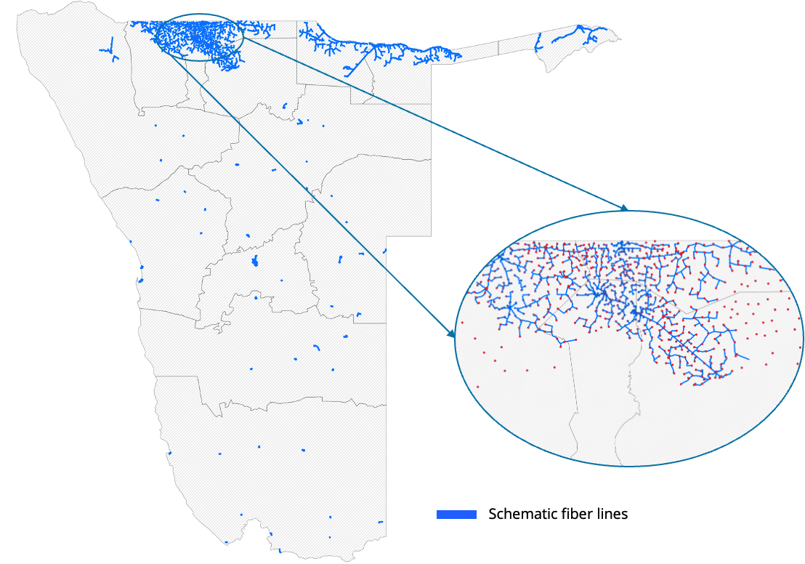

Models
Fiber
The fiber path model identifies the shortest and most cost-effective paths for connecting unconnected points of interest (POIs) to the existing optical fiber network using the road network. By minimizing the total length of fiber required, this model reduces overall deployment costs while efficiently extending connectivity.
To start with, the model connects POIs and fiber nodes to the existing road network using straight lines (unless they are already on the road network). Then, for each unconnected POI, it computes the shortest path to all fiber nodes. POIs that are already connected to the fiber network can also act as fiber nodes, from which the fiber network can be extended.
Figure: Graph initialization and fiber path algorithm

At each step of the algorithm, new connections are made between connected and unconnected points as long as the length of the new connection is below a specified threshold. For example, it can be specified that no single fiber line should be longer than 5 kilometers.
This approach enables economies of scale: POIs can act as relay points for neighboring POIs, enabling connectivity without each one needing to connect directly to a transmission node. This approach optimizes resource usage and simplifies network expansion.
In practice, this model is an application of Kruskal's algorithm to find a Minimum Spanning Tree (MST) in a network graph, where the edges are the road network and the vertices are POIs and fiber nodes. The MST ensures the minimal fiber path necessary to connect all relevant points while adhering to road network constraints related to distance.
Figure: Output of fiber path algorithm

Feasibility
Fiber is considered a feasible technology for a POI if the algorithm is able to connect that POI to the fiber network, given the algorithm constraints - particularly the maximum length of fiber allowed per connection. In practice, fiber will not be feasible for POIs that are very far away from transmission nodes or other POIs.
Required data inputs
- Points of interest
- Transmission nodes
The data on the road network is automatically fetched by the model from OpenStreetMap.
Model parameters
| Description | Example value | Configurable in CPP |
|---|---|---|
| Maximum connection length (meters) | 50,000 | Yes |
| Network type | Type of road network to consider (e.g., all public roads) | No |
| Distance metric | Metric to compute distances in the network (e.g., 'length') | No |
| Number of clusters | Number of geographical clusters used for analysis | No |
| Use road data | Whether to use road network data for distance calculations | No |
Fiber cost function
The fiber cost function is summarized below. The CAPEX cost for each POI is dependent on the amount of fiber required to connect that school.
| Description | Example value | Configurable in CPP |
|---|---|---|
| Annual hardware maintenance and replacement costs (USD per year, as a fraction of hardware CAPEX) | 0.1 | Yes |
| Access bandwidth cost (USD per Mbps per year) | 31.8 | Yes |
| Transit bandwidth cost (USD per Mbps per year) | 12 | Yes |
| Fiber cost (USD per km) | 8,000 | Yes |
| Hardware setup cost (USD per POI) | 500 | Yes |
| Hardware refresh after (Years) | 3 | Yes |
Figure: Fiber cost function

Cellular
The cellular model relies on cellular coverage analysis. If mobile coverage contours are provided, such as in the Figure below, then the coverage status is determined by overlaying the POIs over this layer.
Figure: Mobile coverage contours
If no mobile coverage contours are provided, then the locations of cell sites have to be provided and mobile coverage is determined by the distance from a cell site. Each site is assumed to provide coverage within a specified maximum radius, which is controlled by the model parameter Coverage radius around cell tower.
Feasibility
Cellular is considered a feasible technology for a POI if it is within the cellular coverage area (3G, 4G or 5G).
Required data inputs
- Points of interest
- Mobile coverage contours
Model parameters
| Parameter | Description | Example value | Configurable in CPP |
|---|---|---|---|
| coverage_distance | Distance around cell sites to assume coverage if no map is available (meters) | 1000 | No |
| coverage_type | Default network type for coverage buffers if no map is available | "4G" | No |
| radii | List of radii (km) used for coverage analysis | [1, 2, 3, 5] | No |
| radius_for_demand | Radius used to aggregate demand around a point | 1 | No |
| dataset_year | Year of the WorldPop population dataset | 2025 | No |
| overlap_allowed | Allow overlap in buffer areas | False | No |
Cellular cost function
The cellular cost function is summarized below.
| Description | Example value | Configurable in CPP |
|---|---|---|
| Reinvest into hardware after (USD per year, as a fraction of hardware CAPEX) | 0.1 | Yes |
| Access ISP fees (USD per Mbps per year) | 24 | Yes |
| Annual traffic fee (USD per Mbps per year) | 12 | Yes |
| Hardware setup cost (USD per POI) | 80 | Yes |
| Reinvest into hardware after (Years) | 3 | Yes |
Figure: Cellular cost function

Point-to-point
The point-to-point model evaluates the feasibility of establishing radio links between points of interest (POIs) and cell sites using visibility analysis. This involves assessing whether the line of sight between a POI and a cell site is obstructed, ensuring that only feasible links are considered for deployment. The analysis uses open topography data from the Shuttle Radar Topography Mission (SRTM), which provides 30-meter resolution elevation data. The maximum visibility limit is set at 35 kilometers, meaning that cell sites beyond this distance are not considered visible or feasible for point-to-point connectivity.
Figure: Visible cell site

Figure: Obstructed cell site

Feasibility
Point-to-point microwave is considered a feasible technology for a POI if at least one cell site (or another POI) is visible from the POI.
Required data inputs
- Points of interest
- Cell sites
Model parameters
| Description | Example value | Configurable in CPP |
|---|---|---|
| Search radius (kilometers) | 35 | No |
| POI antenna height (meters) | 15 | No |
| Number of visible towers to look for | 1 | No |
| Allowed radio types for cell sites | ['4G', '5G'] | No |
Point-to-point cost function
The point-to-point cost function is summarized below. There are added complexities in this cost function due to the presence of additional physical infrastructure, such as retransmission towers and backhaul links - as well as additional one-time and annual license fees.
| Description | Example value | Configurable in CPP |
|---|---|---|
| Bandwidth per access link (MHz) | 10 | Yes |
| Annual hardware maintenance and replacement costs (USD per year, as a fraction of hardware CAPEX) | 0.004 | Yes |
| Access ISP fees (USD per Mbps per year) | 24 | Yes |
| Annual recurring license fee for 1MHz (USD per MHz per year) | 100 | Yes |
| Annual traffic fee (USD per Mbps per year) | 12 | Yes |
| Bandwidth per backhaul link (MHz) | 20 | Yes |
| Hardware setup cost, including access links and assuming one hop per POI (USD per POI) | 500 | Yes |
| One time license fee for 1MHz (USD per MHz) | 500 | Yes |
| Reinvest into hardware after (Years) | 5 | Yes |
Figure: Point to point cost function

Satellite
There is no specific analysis used to assess the feasibility of satellite connections. They are considered always feasible in this version of the platform.
Feasibility
Satellite connections are always considered feasible.
Required data inputs
- Points of interest
Satellite cost function
The satellite cost function is summarized below.
| Description | Example value | Configurable in CPP |
|---|---|---|
| Annual hardware maintenance and replacement costs (USD per year, as a fraction of hardware CAPEX) | 0.04 | Yes |
| Access ISP fees (USD per Mbps per year) | 24 | Yes |
| Annual traffic fee (USD per Mbps per year) | 12 | Yes |
| Hardware setup cost (USD per POI) | 3,000 | Yes |
| Reinvest into hardware after (Years) | 5 | Yes |
Figure: Satellite cost function